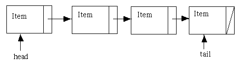

This page covers data types and structures, such as arrays, linked lists, queues and stacks.
Arrays are much functionally similar to Python's lists. They hold a series of objects that are all the same size and type. An example array is below.
array <char,5> arr = {'A', 'B', 'C', 'D', 'E'};
This array is fixed in size and contains the five lettered elements. This is a simple data structure. However it has its limitations, as if an elements is to be removed from the array, all other elements need to be moved to fill the space left by removing an elements.
A more complicated structure is a linked list. This is like an array in a sense, but elements in the list point to the next element in the list. If the linked list is doubly linked, each element points not only to the next element in the list, but also the previous element in the list. They use pointers in C++ to point to the elements and therefore dynamic memory. They are more useful they arrays as they can change size and elements can be inserted and deleted alot more easily, as only the pointers need changing, not the elements themselves.
Queues and stacks are two similar types of abstract data types that function in different ways.
Queues work on an First in First out (FIFO) principle. This can be imagined like a queue at the shops, where the person at the front of the queue will be served first, and the the person behind them and so forth. Each end of the queue is called the front and the back and new elements are 'pushed' onto the back of the queue. When an element at the front of the queue is finshed with, it is 'popped' off the front of the queue. This can be reperesented by a linked list.

The image above shows a linked list. If we were to pop a item from this queue, the head arrow would move to the item on the right of it. Likewise, if a new item was pushed onto the queue, the tail arrow would point to the new item, with the previous tail item linked to the new tail.
In contrast, Stacks are the opposite to Queues, offering a First in Last out (FILO) priniciple. This oculd be pictured as a stack of dirty plates where the last one put on the pile will be at the top, and therefore the first one off the pile when they are washed. The ends are the stack are called the top and the bottom and new elements are pushed onto the top of the stack. Elements are removed from the stack by popping, from the top to the bottom. Both an array or a linked list would be suitable for a stack, but it the number of elements of the stack is unknown, a linked list is the better choice due to the dynamic nature.
The above is the visual repersentation of a stack. The items are added and removed from the top of the stack.
Trees are a variation of a linked-list. Composed of nodes with relationships, each node has a value, with the root node at the top of the tree. A common tree is a binary tree, which is commonily very balanced, ordered and good for binary search. Binary trees nodes greater than the root are on the right and lower than the root to the left. This filters down the tree until a suitable spot is found for a node.
Above shows a binary tree. Not all trees have to look like this binary tree, they can be unbalanced. However, this can impact the use of the tree, as it can take longer to search or use a unbalanced tree, although there is a dependency on what you are using a tree for. The balance of a tree is the distrubution of the nodes across the whole tree. An unbalanced tree may have many node on one side, and little to none on the other,